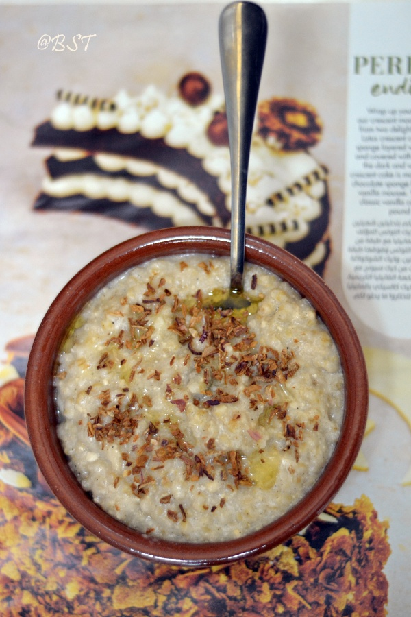

Jareesh
Jareesh Recipe

Traditional Saudi Cracked Wheat and Meat Dish
Ingredients:
- 1 cup jareesh (cracked wheat), soaked for 30 minutes
- 500g lamb or chicken, cut into pieces
- 1 large onion, finely chopped
- 3 cloves garlic, minced
- 2 tablespoons tomato paste
- 1 teaspoon ground cumin
- 1 teaspoon ground coriander
- 1/2 teaspoon ground black pepper
- 1/2 teaspoon ground turmeric
- Salt, to taste
- 4 cups water or chicken broth
- Olive oil or ghee for cooking
- Chopped fresh parsley, for garnish (optional)
- Fried onions, for garnish (optional)
Directions:
- In a large pot, heat oil or ghee over medium heat. Add onions and cook until golden, then add garlic and cook for another minute.
- Add meat and brown on all sides. Stir in tomato paste, cumin, coriander, black pepper, turmeric, and salt. Mix well to coat the meat with spices.
- Pour in water or chicken broth and bring to a boil. Reduce heat, cover, and simmer for 30-40 minutes, until the meat is tender.
- Drain the soaked jareesh and add it to the pot. Stir well, cover, and cook on low heat for 30-40 minutes, stirring occasionally, until the jareesh is soft and the dish has thickened.
- Adjust seasoning as needed. Garnish with fresh parsley and fried onions if desired.
- Serve hot and enjoy the rich, comforting flavors of jareesh!